Mapping data in R
Sample files for this exercise
Data used in the following exercises can be loaded into your current R session by running the following chunk of code.
The data objects consist of five layers: an elevation raster (elev.r), an interstate polyline layer (inter.sf), a point cities layer (p.sf), a railroad polyline layer (rail.sf) and a Maine counties polygon layer (s.sf). All vector layers are sf objects.
R offers many different mapping environments. Most spatial object types have their own plot methods that can be called via plot(). This is fine when seeking a quick view of the data, but if you need more control of the look and feel of the map, you might want to turn to the tmap package.
The tmap functions will recognize sf, raster and Spatial* objects.
The basics
To map the counties polygon layer using a uniform grey color color scheme, type:

The tm_shape function loads the spatial object (it can be vector or raster) and the tm_polygons function is one of many tmap functions that dictates how the spatial object is to be mapped. The col parameter defines either the polygon fill color or the spatial object’s attribute column to be used to define the polygons’ color scheme (thus generating a choropleth map). For example, to use the Income attribute value to define the color scheme, type:
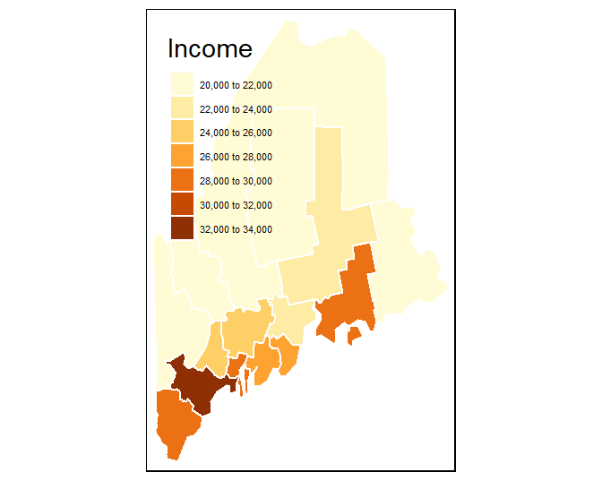
You can customize the map by piecing together various map element functions. For example, to move the legend box outside of the main map body add a tm_legend(outside = TRUE) element to the mapping operation. Note the + symbol used to piece the functions together.
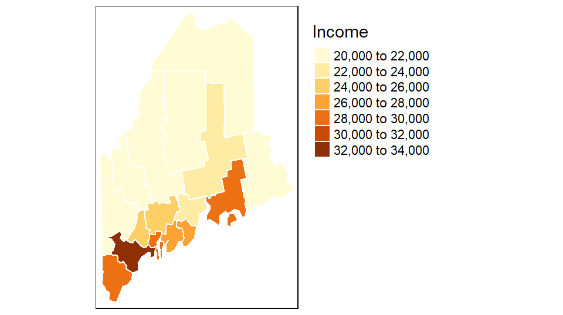
You can also choose to omit the legend box (via the legend.show=FALSE parameter) and the data frame border (via the tm_layout(frame = FALSE) parameter:
tm_shape(s.sf) +
tm_polygons("Income", border.col = "white", legend.show=FALSE) +
tm_layout(frame = FALSE)
If you want to omit the polygon border lines from the plot, simply add border.col = NULL to the list oftm_polygons parameters.
Note that the tm_fill function is nearly identical to the tm_polygons function with the difference being that the tm_fill function ignores polygon borders.
Combining layers
You can easily stack layers by piecing together additional tmp_shapes. In the following example, the railroad layer and the point layer are added to the income map. The railroad layer is mapped using the tm_lines function and the cities point layer is mapped using the tm_dots function. Note that layers are pieced together using the + symbol.
tm_shape(s.sf) +
tm_polygons("Income", border.col = NULL) +
tm_legend(outside = TRUE) +
tm_shape(rail.sf) + tm_lines(col="grey70") +
tm_shape(p.sf) + tm_dots(size=.3, col="black") 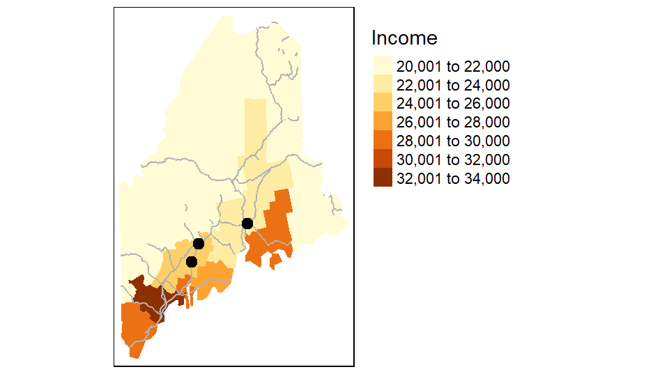
Layers are stacked in the order in which they are listed. In the above example, the point layer is the last layer called therefore it is drawn on top of the previously called layers.
Tweaking classification schemes
You can control the classification type, color scheme, and bin numbers via the tm_polygons function. For example, to apply a quantile scheme with 6 bins and varying shades of green type,
tm_shape(s.sf) +
tm_polygons("Income", style="quantile", n = 6, palette = "Greens") +
tm_legend(outside = TRUE)
Other style classification schemes include fixed, equal, jenks, kmeans and sd. If you want to control the breaks manually set style=fixed and specify the classification breaks using the breaks parameter. For example,
tm_shape(s.sf) +
tm_polygons("Income", style="fixed",palette = "Greens",
breaks=c(0,23000 ,27000,100000 )) +
tm_legend(outside = TRUE)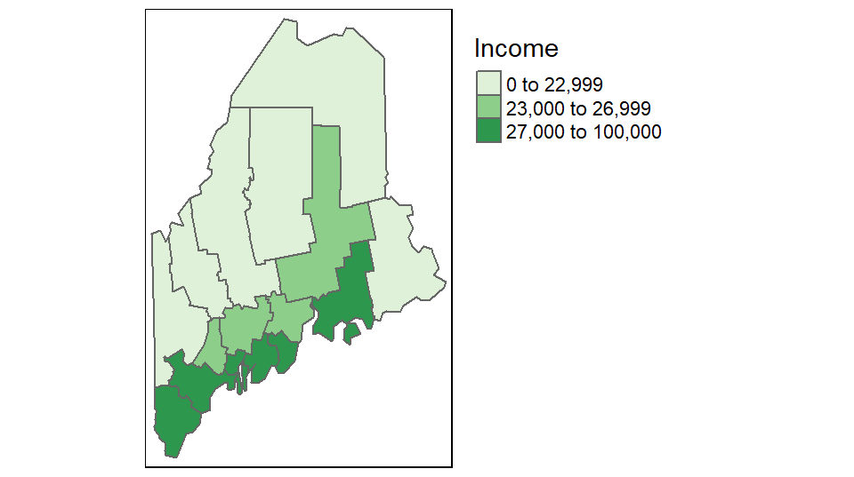
If you want a bit more control over the legend elements, you can tweak the labels parameter as in,
tm_shape(s.sf) +
tm_polygons("Income", style="fixed",palette = "Greens",
breaks=c(0,23000 ,27000,100000 ),
labels=c("under $23,000", "$23,000 to $27,000", "above $27,000"),
text.size = 1) +
tm_legend(outside = TRUE)
Tweaking colors
There are various color schemes to choose from, but you will probably want to stick to color swatches established by Cynthia Brewer. These palettes are available in tmap and their names are listed below.
For sequential color schemes, you can choose from the following palettes.

For divergent color schemes, you can choose from the following palettes.

For categorical color schemes, you can choose from the following palettes.
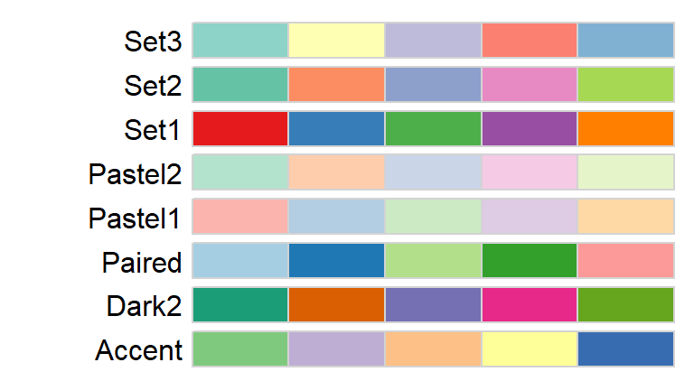
For example, to map the county names using the Pastel1 categorical color scheme, type:

To map the percentage of the population not having attained a high school degree (column labeled NoSchool in s.sf) using a YlOrBr palette with 8 bins while modifying the legend title to read “Fraction without a HS degree”, type:
tm_shape(s.sf) +
tm_polygons("NoSchool", style="quantile", palette = "YlOrBr", n=8,
title="Fraction without \na HS degree") +
tm_legend(outside = TRUE)
The character \n in the “Fraction without \na HS degree” string is interpreted by R as a new line (carriage return).
If you want to reverse the color scheme simply add the minus symbol - in front of the palette name as in palette = "-YlOrBr"
Adding labels
You can add text and labels using the tm_text function. In the following example, point labels are added to the right of the points (just="left") with an x offset of 0.5 units for added buffer between the point and the text.
tm_shape(s.sf) +
tm_polygons("NAME", palette = "Pastel1", border.col = "white") +
tm_legend(outside = TRUE) +
tm_shape(p.sf) +
tm_dots(size=.3, col="red") +
tm_text("Name", just="left", xmod=0.5, size=0.8)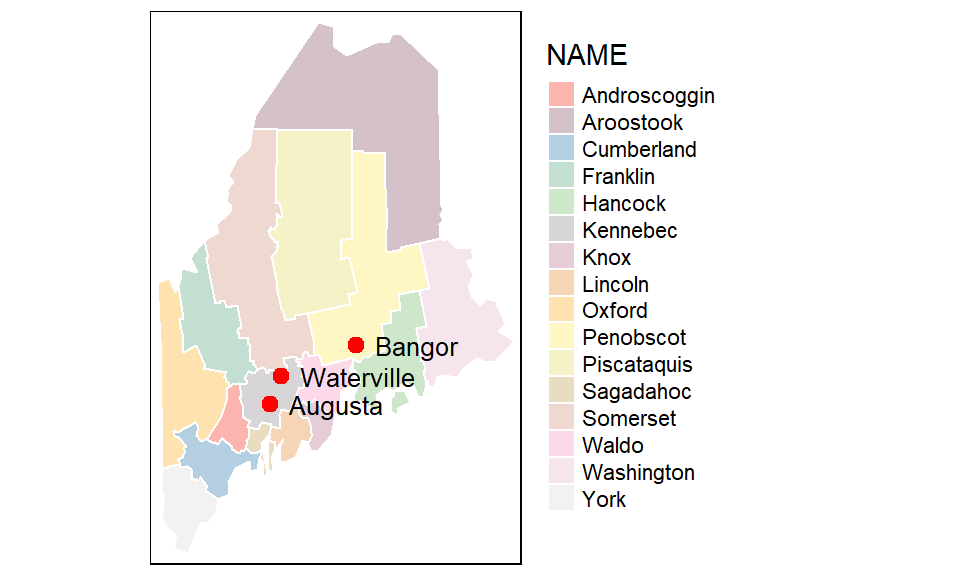
The tm_text function also accepts an auto placement option via the parameter auto.placement = TRUE. This uses a simulated annealing algorithm. Note that this automated approach may not generate the same text placement after reach run.
Adding a grid or graticule
You can add a grid or graticule to the map using the tm_grid function. You will need to modify the map’s default viewport setting via the tm_layout function to provide space for the grid labels. In the following example, the grid is generated using the layer’s UTM coordinate system and is divided into roughly four segments along the x-axis and five segments along the y-axis. The function will adjust the grid placement so as to generate “pretty” label values.
tm_shape(s.sf) +
tm_polygons("NAME", palette = "Pastel1") +
tm_legend(outside = TRUE) +
tm_layout(outer.margins = c(.1,.1,.1,.1)) +
tm_grid(labels.inside.frame = FALSE,
n.x = 4, n.y = 5)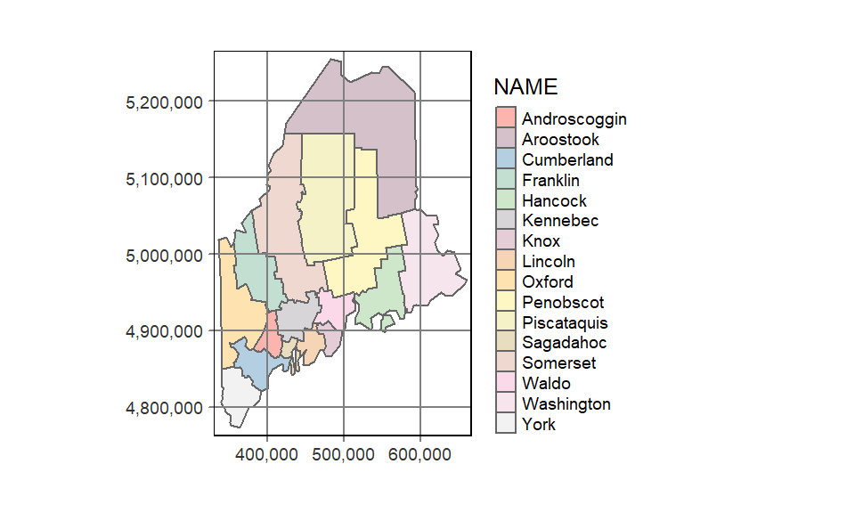
To generate a graticule (lines of latitude and longitude), simply modify the grid’s coordinate system to a geographic one using a PROJ4 formatted string. We can also modify the grid placement by explicitly specifying the lat/long grid values.
tm_shape(s.sf) +
tm_polygons("NAME", palette = "Pastel1") +
tm_legend(outside = TRUE) +
tm_layout(outer.margins = c(.1,.1,.1,.1)) +
tm_grid(labels.inside.frame = FALSE,
x = c(-70.5, -69, -67.5),
y = c(44, 45, 46, 47),
projection = "+proj=longlat")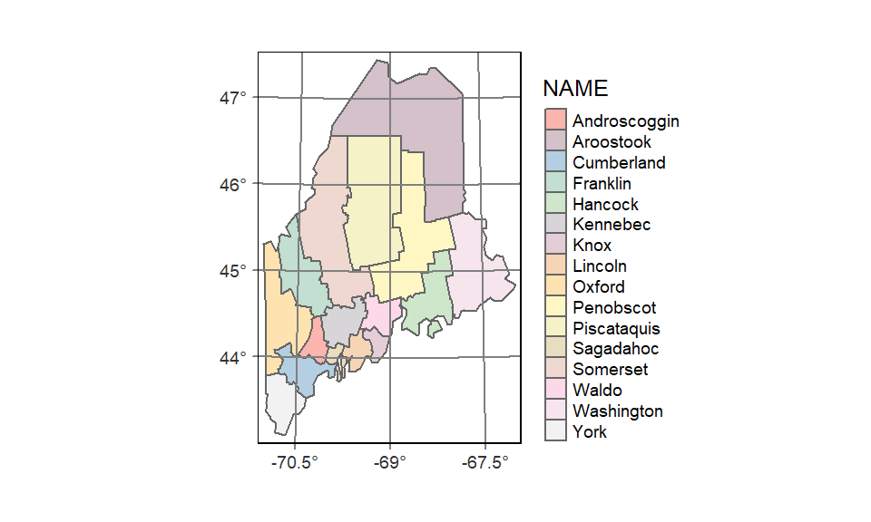
Adding the ° symbol to the lat/long values requires a bit more code:
tm_shape(s.sf) +
tm_polygons("NAME", palette = "Pastel1") +
tm_legend(outside = TRUE) +
tm_layout(outer.margins = c(.1,.1,.1,.1)) +
tm_grid(labels.inside.frame = FALSE,
x = c(-70.5, -69, -67.5) ,
y = c(44, 45, 46, 47),
projection = "+proj=longlat",
labels.format = list(fun=function(x) {paste0(x,intToUtf8(176))} ) )
Adding statistical plot
A histogram of the variables being mapped can be added to the legend element. By default, the histogram will inherit the colors used in the classification scheme.
tm_shape(s.sf) +
tm_polygons("NoSchool", palette = "YlOrBr", n=6, legend.hist = TRUE, title="% no school") +
tm_legend(outside = TRUE, hist.width=2) 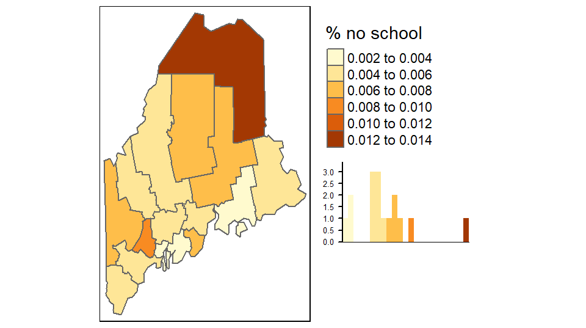
Mapping raster files
Raster objects can be mapped by specifying the tm_raster function. For example to plot the elevation raster and assign 64 continuous shades of the built-in terrain color ramp, type:
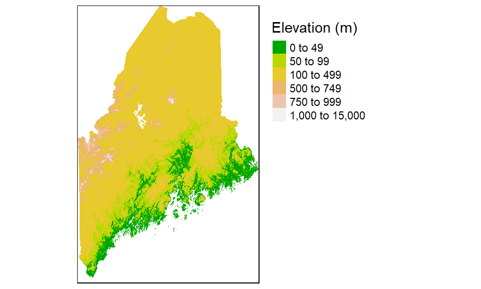
Note the use of another style parameter option: cont for continuous color scheme.
You can choose to symbolize the raster using classification breaks instead of continuous colors. For example, to manually set the breaks to 50, 100, 500, 750, 1000, and 15000 meters, type:
tm_shape(elev.r) +
tm_raster(style="fixed",
breaks = c(0, 50, 100, 500, 750, 1000, 15000),
palette = terrain.colors(5))+
tm_legend(outside=TRUE)Other color gradients that R offers include, heat.colors, rainbow, and topo.colors. You can also create your own color ramp via the colorRampPalette function. For example, to generate a 12 bin quantile classification scheme using a color ramp that changes from darkolivegreen4 to yellow to brown (these are built-in R colors), and adding a histogram to view the distribution of colors across pixels, type:
tm_shape(elev.r) +
tm_raster(style="quantile", n = 12,
palette = colorRampPalette( c("darkolivegreen4","yellow", "brown"))(12),
legend.hist = TRUE)+
tm_legend(outside=TRUE, hist.width=2)Note that the Brewer palette names can also be used with rasters.
Changing coordinate systems
tmap can change the output’s coordinate system without needing to reproject the data layers. In the following example, the elevation raster, railroad layer and point city layer are mapped onto a USA Contiguous Albers Equal Area Conic projection. A lat/long grid is added as a reference.
# Define the Albers coordinate system
aea <- "+proj=aea +lat_1=29.5 +lat_2=45.5 +lat_0=37.5 +lon_0=-96 +ellps=GRS80 +datum=NAD83"
# Map the data
tm_shape(elev.r, projection = aea) +
tm_raster(style="quantile", n = 12,
palette = colorRampPalette( c("darkolivegreen4","yellow", "brown"))(12),
legend.show = FALSE) +
tm_shape(rail.sf) + tm_lines(col="grey70")+
tm_shape(p.sf) +tm_dots(size=0.5) +
tm_layout(outer.margins = c(.1,.1,.1,.1)) +
tm_grid(labels.inside.frame = FALSE,
x = c(-70.5, -69, -67.5),
y = c(44, 45, 46, 47),
projection = "+proj=longlat")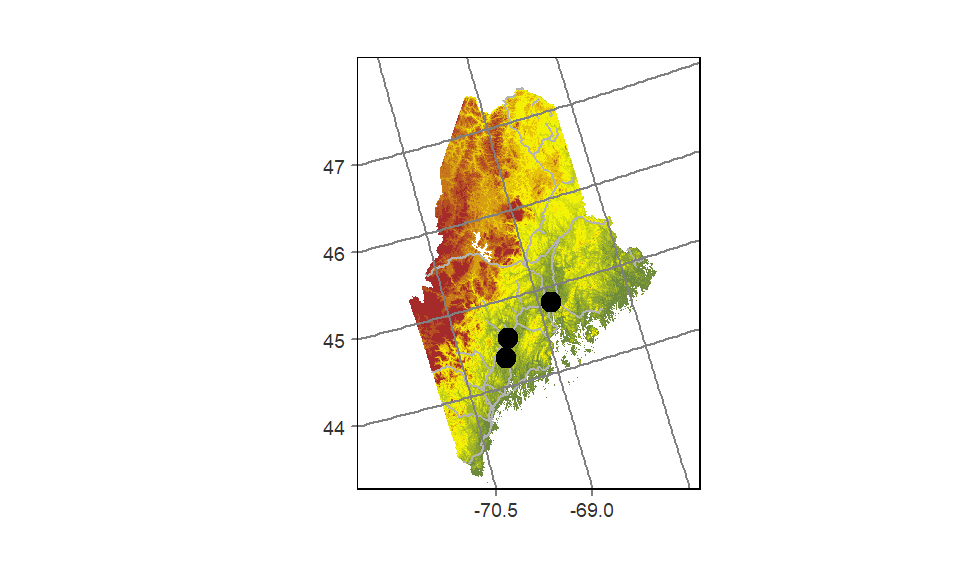
The first data layer’s projection= parameter will define the map’s coordinate system. Note that this parameter does not need to be specified in the other layers taking part in the output map.
If a projection is not explicitly defined in the first call to tm_shape, then the output map will default to the first layer’s reference system.
Side-by-side maps
You can piece maps together side-by-side using the tmap_arrange function. You first need to save each map to a separate object before combining them. For example:
inc.map <- tm_shape(s.sf) + tm_polygons(col="Income")+
tm_legend(outside=TRUE)
school.map <- tm_shape(s.sf) + tm_polygons(col="NoSchool")+
tm_legend(outside=TRUE)
name.map <- tm_shape(s.sf) + tm_polygons(col="NAME")+
tm_legend(outside=TRUE)
tmap_arrange(inc.map, school.map, name.map)
Splitting data by polygons or group of polygons
You can split the output into groups of features based on a column attribute. For example, to split the income map into individual polygons via the NAME attribute, type:
tm_shape(s.sf) + tm_polygons(col="Income")+
tm_legend(outside=TRUE) +
tm_facets( by = "NAME", nrow =2)
The order of the faceted plot follows the alphanumeric order of the faceting attribute values.